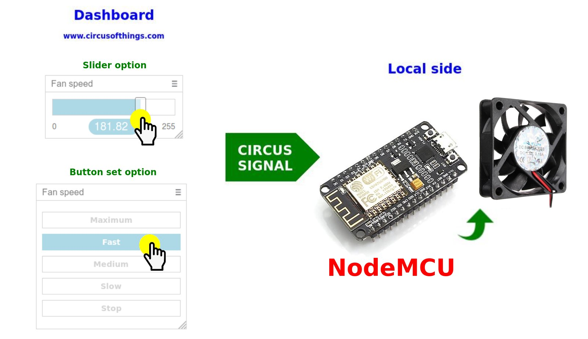
Control Fan speed from dashboard with NodeMCU
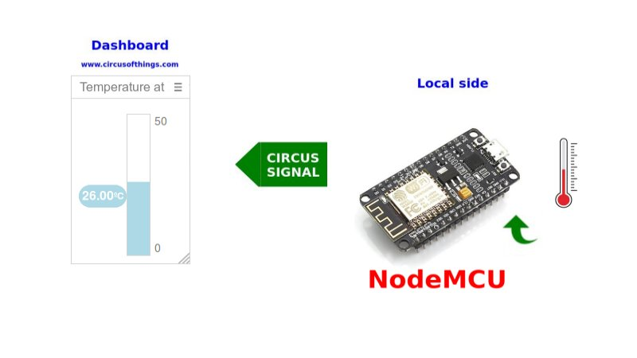
Monitor Temperature from Dashboard with NodeMCU
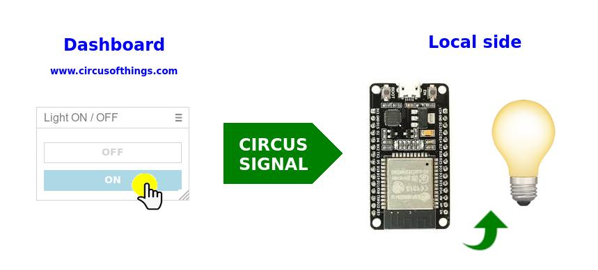
Switch light from Dashboard with ESP32
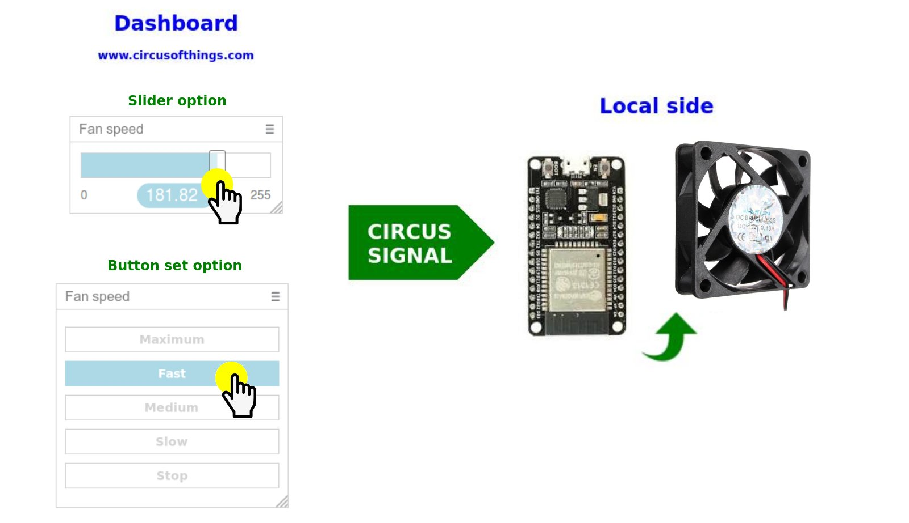
Control fan speed from Dashboard with ESP32
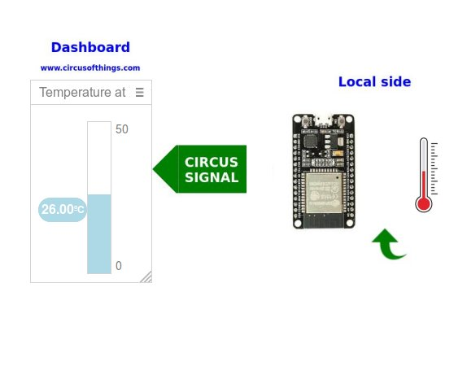
Monitor temperature from Dashboard with ESP32
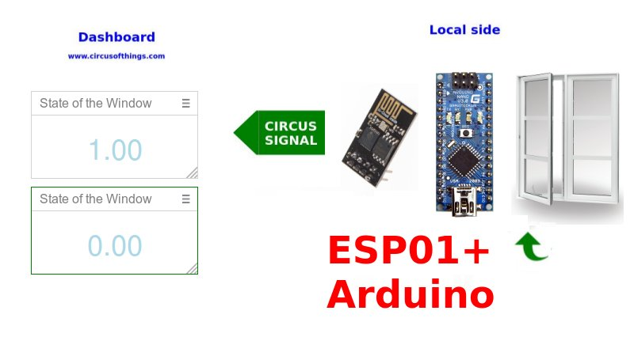
Report window state to the Dashboard with Arduino Nano and ESP01 module
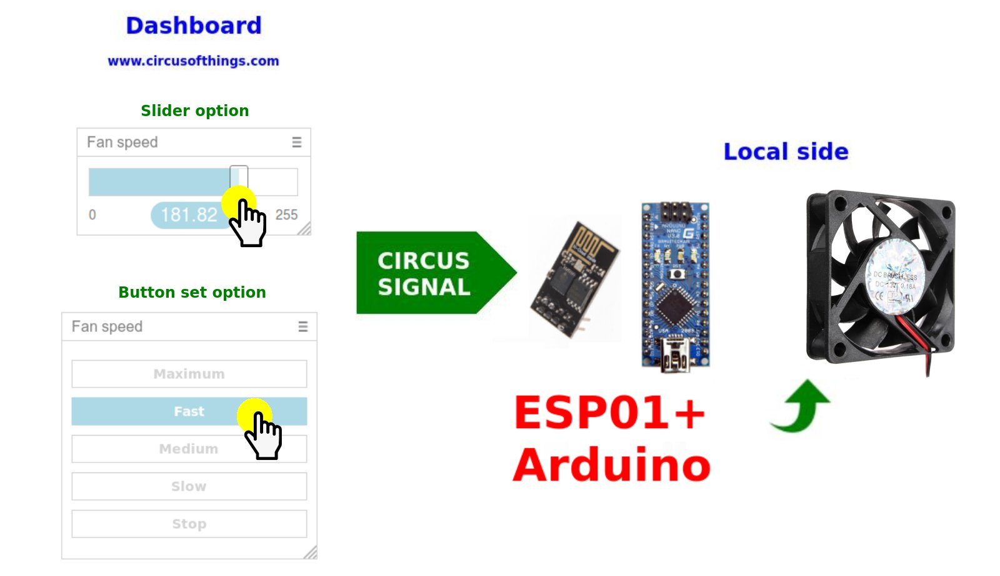
Control fan speed from Dashboard with Arduino(Nano) and ESP01 module
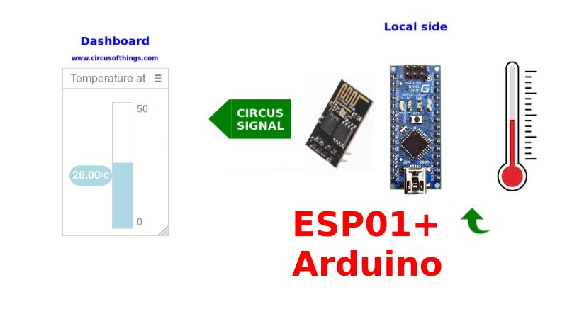
Publish Your Arduino Data to the Cloud
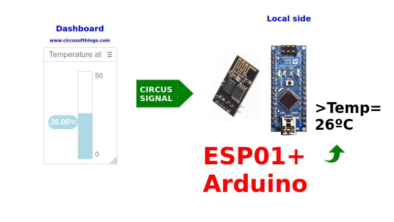
Get Data from the Cloud to Your Arduino
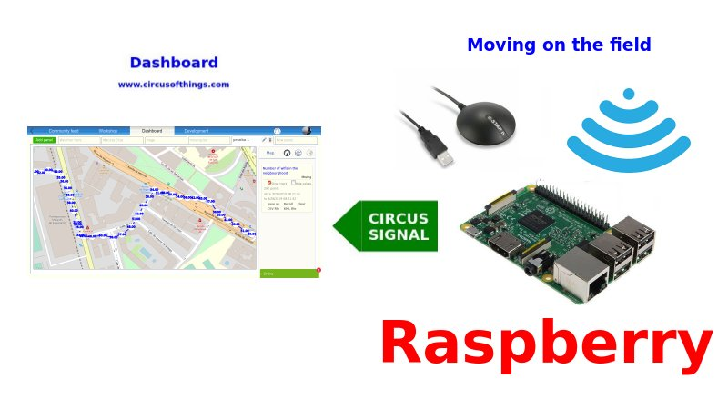
Basic Warwalking with a Raspberry
Monitoring temperature and humidity with ESP32
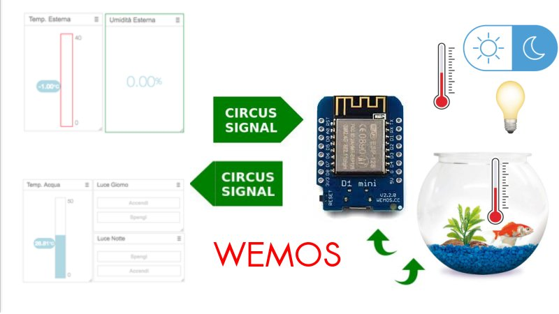
Control Relay from dashboard and Monitor Temperature with Wemos